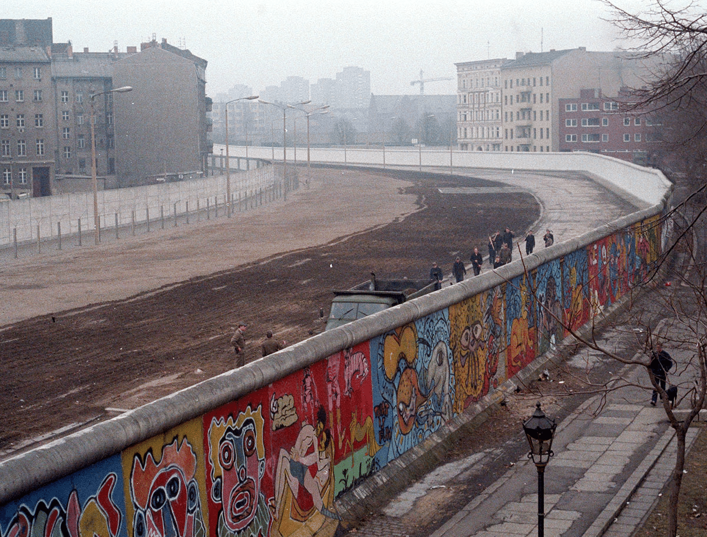
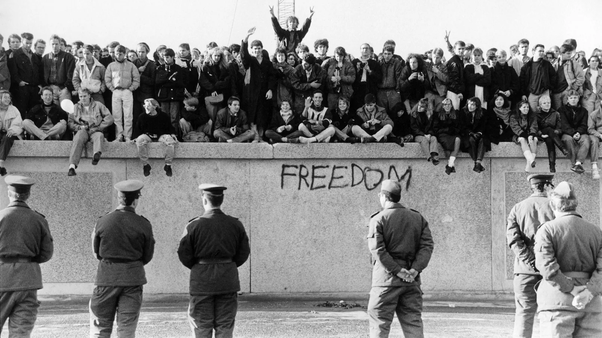

Trump acepta reconstruir el Muro de Berlín

El Muro de Berlín fue una construcción física y simbólica que dividió a Alemania y, en muchos aspectos, al mundo. Levantado por la Alemania Oriental en 1961, el muro separó Berlín Oriental del Berlín Occidental, aislando a quienes vivían en el lado comunista de quienes estaban en el sector occidental, capitalista y democrático.  Más allá de sus 155 kilómetros de cemento y alambradas, este muro se convirtió en un símbolo de la Guerra Fría y la tensa división ideológica entre los bloques liderados por Estados Unidos y la Unión Soviética.
A propósito de los 30 años de la caída de muro que dividió las dos Alemanias, un grupo sin fines de lucro envió a la Casa Blanca un pedazo de esa histórica barrera al presidente de EEUU con un hermoso mensaje. Trump lo rechazó y ahora está frente a una sección de la barrera entre México y EEUU en San Ysidro.
En más de 40 años escribiendo de política, no he sufrido un chasco tan inesperado como el del abandono de Ucrania por parte de Estados Unidos. No sólo por deprimente, sino por absurdo. Donald Trump había empezado a hacer muchas cosas buenas en este m
 ¿Qué fue de la nación que se veía como «la luz en la casa en la colina, que no puede esconderse», y no se escondía, cuyo liderazgo no era sólo militar y económico, sino moral, defendiendo el ideal, no siempre posible, de la democracia liberal frente a las dictaduras? Trump apuñala por la espalda a Zelenski, pero también al Reagan que dijo ante el Muro de Berlín: «¡Señor Gorbachov, derribe este muro!». Y ahora Trump dice: «Tranquilo, amigo, puedes levantarlo de nuevo, que no me meteré en tus asuntos».